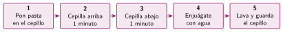

Algoritmos: pasos claros y en orden
🤔 Pienso5 min
Qué hago aquí: Piensa un momento y contesta con lo que ya sabes. No pasa nada si no lo sabes: es para empezar.
Por parejas y de espaldas. Uno dibuja una casa sin enseñarla y le dicta al otro cómo dibujarla. ¿Se parecen los dos dibujos? ¿Qué instrucción falló?
📖 Leo y aprendo15 min
Qué hago aquí: Lee despacio, mira los dibujos y los ejemplos, y quédate con la idea clave del final.
Antes de programar, pensamos los pasos. Esa lista de pasos es un algoritmo.

Un programa es un algoritmo escrito en un lenguaje de programación. Primero pensamos el algoritmo. Después lo programamos.
✏️ Hago25 min
Qué hago aquí: Haz las actividades en orden. Empieza siempre por las básicas.
Ordena los pasos para hacer una llamada. Escribe el número delante.
- Marcar el número.
- Desbloquear el móvil.
- Hablar.
- Pulsar el botón verde.
Escribe las tres reglas de un buen algoritmo.
Escribe un algoritmo de cinco pasos para preparar la mochila.
✏️ Puedes responder escribiendo, con un dibujo o un esquema, o contándolo en voz alta.
Este algoritmo para cruzar la calle tiene un fallo de orden. Corrígelo.
1. Cruza. 2. Llega al paso de peatones. 3. Mira el semáforo. 4. Si está verde, cruza.
🚀 Amplío (si quieres saber más)
Qué hago aquí: ¿Has terminado? Lee la curiosidad o elige el reto. Es voluntario.
Escribe un algoritmo para buscar una palabra en el diccionario. Tiene que terminar también si la palabra no está.
✅ Compruebo5 min
Qué hago aquí: Contesta sin mirar la ficha y marca cómo lo llevas.